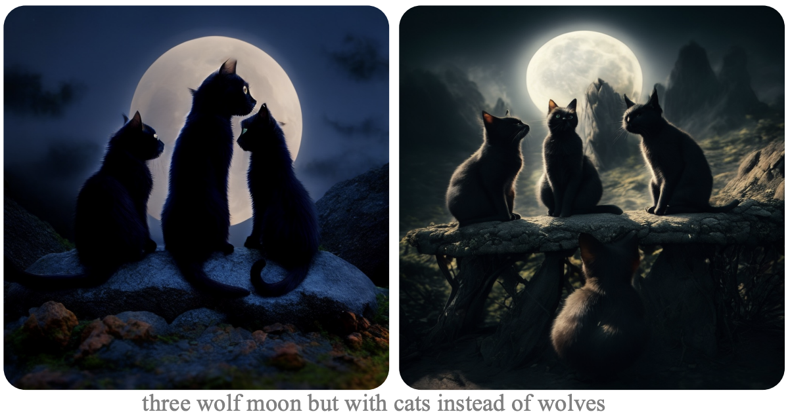

I am staff research scientist at Meta GenAI, working on image and video generation, including personalized image/video diffusion models, native image generation, and controllable generation. I obtained my Ph.D. from Princeton University.
I am interested in generative models for image and video, including diffusion-based and native generation models. I was the 1) core contributor of MovieGen, leading personalized video generation pretrain and post-train, 2) lead and first author of Imagine Yourself, Meta's first personalized image generation model, and 3) core contributor to Llama native image generation, focusing on native model architecture design and development.
DirectorLLM for Human-Centric Video Generation
Kunpeng Song, Tingbo Hou, Zecheng He, Haoyu Ma, Jialiang Wang, Animesh Sinha, Sam Tsai, Yaqiao Luo, Xiaoliang Dai, Li Chen, Xide Xia, Peizhao Zhang, Peter Vajda, Ahmed Elgammal, Felix Juefei-Xu,
arXiv Preprint, 2024
paper

Token-Shuffle: Towards High-Resolution Image Generation with Autoregressive Models
Xu Ma, Peize Sun, Haoyu Ma, Hao Tang, Chih-Yao Ma, Jialiang Wang, Kunpeng Li, Xiaoliang Dai, Yujun Shi, Xuan Ju, Yushi Hu, Artsiom Sanakoyeu, Felix Juefei-Xu, Ji Hou, Junjiao Tian, Tao Xu, Tingbo Hou, Yen-Cheng Liu, Zecheng He, Zijian He, Matt Feiszli, Peizhao Zhang, Peter Vajda, Sam Tsai, Yun Fu
arXiv Preprint, 2024
paper
{kind=link}